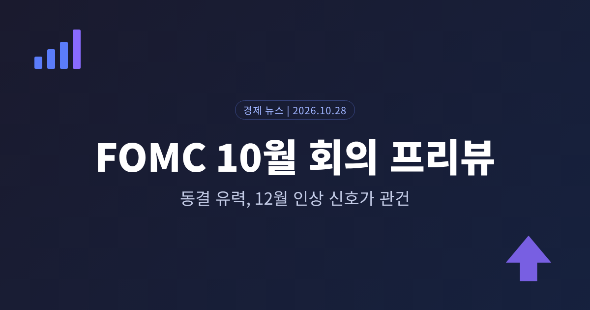
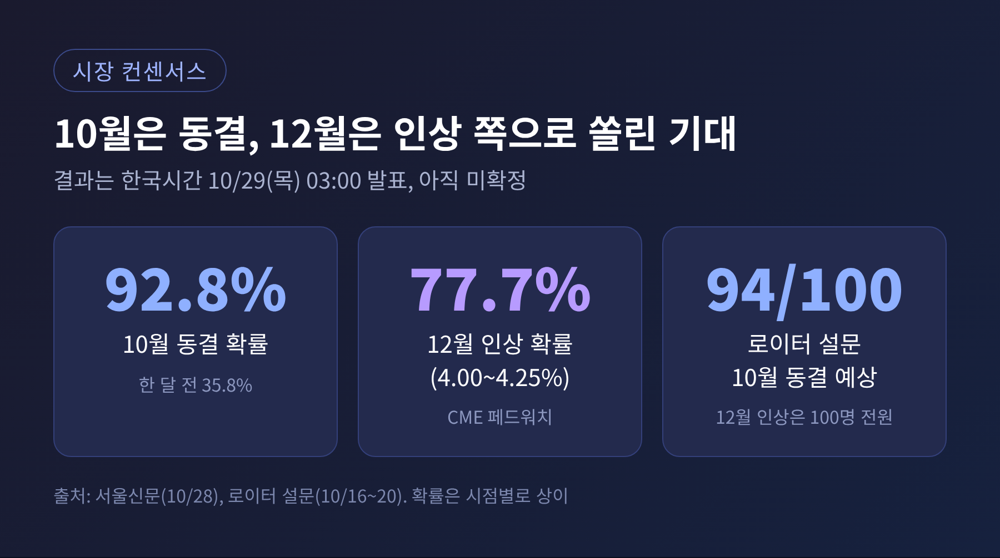
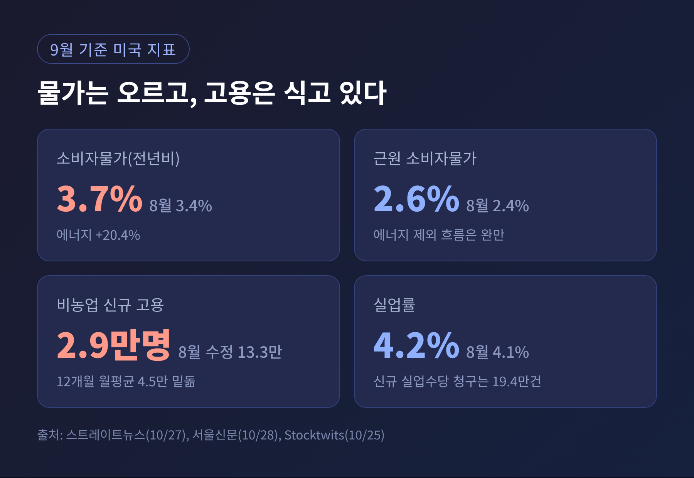
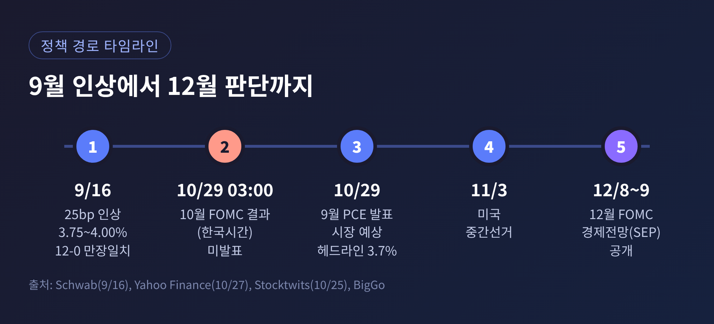
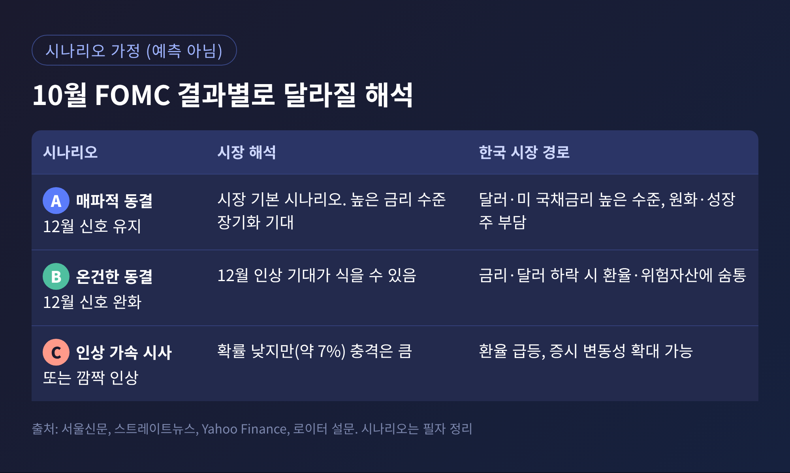
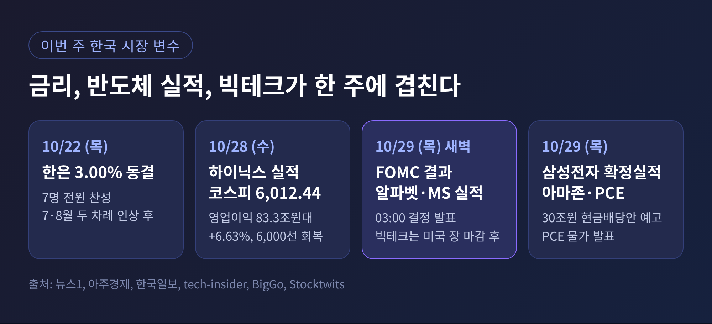

FOMC 10월 회의 프리뷰, 동결 유력 속 12월 인상 신호가 관건

3줄 요약
- 미국 연준(FOMC)은 한국시간 10월 29일(목) 새벽 3시에 결과를 발표합니다. 결과는 아직 나오지 않았습니다.
- 시장은 동결을 압도적으로 점치고, 눈은 12월 인상 신호와 워시 의장의 기자회견에 쏠려 있습니다.
- 같은 주 SK하이닉스·삼성전자 실적과 빅테크 실적이 겹쳐, 한국 증시와 환율이 함께 움직일 수 있습니다.
오늘은 미국 연준의 10월 FOMC를 앞둔 시점에서 쟁점을 정리해 보려 합니다. 이번 회의는 금리를 내릴지가 아니라, 올린 금리를 얼마나 더 끌고 갈지를 가늠하는 자리입니다. 한국 환율과 코스피, 한국은행 금리에 닿는 경로도 함께 짚겠습니다.
■ 무슨 일이 있는가: 9월에 올린 금리, 10월에는 쉬어갈까
연준은 9월 16일 기준금리를 0.25%포인트 올려 3.75~4.00%로 정했습니다. 2023년 이후 첫 인상이었고, 위원 12명이 전원 찬성했습니다. 그 뒤 처음 열리는 회의가 이번 10월 27~28일 FOMC입니다.
결정은 미국 동부시간 28일 오후 2시, 한국시간으로 29일 새벽 3시에 나옵니다. 이어 케빈 워시 의장의 기자회견이 열립니다.
참고로 지금 연준 의장은 워시입니다. 제롬 파월 전 의장의 의장 임기는 올해 5월 15일에 끝났습니다. 그래서 이번 회의의 관전 포인트는 파월이 아니라 워시의 입에 있습니다.

시장의 기대는 한쪽으로 모여 있습니다. 서울신문이 인용한 CME 페드워치 기준으로 10월 동결 확률은 92.8%입니다. 한 달 전에는 35.8%, 일주일 전에는 84.5%였습니다. 기대가 빠르게 굳어진 셈입니다.
12월 8~9일 회의에서 4.00~4.25%로 올릴 확률은 77.7%로 집계됐습니다. 로이터가 10월 16~20일 경제학자 100명에게 물은 결과도 비슷합니다. 94명이 10월 동결, 100명 전원이 12월 인상을 예상했습니다. 9월 조사에서는 12월 인상 응답이 절반에 못 미쳤습니다.
다만 확률은 시점마다 조금씩 다릅니다. 같은 날 다른 매체는 동결 확률을 약 90%, 인상 확률을 약 7%로 전했습니다. 이 글의 수치는 보도 시점을 감안해 읽으셔야 합니다.
■ 왜 중요한가: 동결이어도 메시지가 시장을 움직입니다
동결은 이미 가격에 반영된 시나리오입니다. 그래서 숫자 자체보다 문구와 기자회견의 어조가 변수가 됩니다. 워시 의장은 앞으로의 정책을 미리 알려주는 포워드 가이던스를 꺼리는 편으로 알려져 있습니다. 월가가 그의 한마디에 숨을 죽이는 이유입니다.
SK증권과 키움증권은 이번 동결을 '매파적 동결'로 봤습니다. 금리는 두되 추가 인상의 문을 열어 두는 형태입니다. 앨런 블라인더 교수도 비슷한 취지로 '매파적 중단(hawkish pause)'을 예상했다고 야후파이낸스가 전했습니다.
여기에 정치 일정이 겹칩니다. 미국 중간선거는 11월 3일입니다. 결정일은 그 엿새 전이어서, 과감한 행보를 하기 어렵다는 해석이 나옵니다.
■ 배경과 쟁점: 물가는 높고 고용은 식어 갑니다

첫째 쟁점은 물가입니다. 9월 소비자물가는 전년 대비 3.7% 올라 8월의 3.4%보다 높아졌습니다. 전월 대비로는 0.6% 올랐습니다. 에너지 가격이 전년 대비 20.4% 뛴 영향이 컸습니다. 근원 소비자물가는 2.6%로, 에너지를 뺀 흐름은 상대적으로 완만합니다.
국제유가는 배럴당 100달러 선 위에 머물고 있고, 브렌트유는 한때 113달러까지 올랐습니다. 회의 다음 날인 29일에는 9월 PCE 물가가 나옵니다. 시장 예상치는 헤드라인 전년비 3.7%, 근원 3.1%입니다.
둘째 쟁점은 고용입니다. 9월 비농업 신규 고용은 2만 9천 명에 그쳤고, 실업률은 4.1%에서 4.2%로 올랐습니다. 최근 12개월 월평균 4만 5천 명도 밑돌았습니다. 한편 신규 실업수당 청구는 19만 4천 건으로 약 57년 만의 최저 수준에 근접했습니다. 해고는 적고 채용도 적은 상태입니다.
물가만 보면 올려야 하고, 고용만 보면 서두를 이유가 적습니다. 연준이 10월에 쉬며 지표를 더 확인하려는 배경입니다.

셋째 쟁점은 12월 이후의 경로입니다. 알파경제가 전한 삼성증권 분석에 따르면, 연준 내부 시각은 여기서 갈립니다. 윌리엄스 총재와 제퍼슨 부의장은 연내 한 차례 인상 뒤 동결하는 경로를 지지합니다. 로건, 무살렘, 해맥 총재 등 강경파는 두 차례 이상 인상을 주장합니다.
로이터 설문에서도 92명 중 38명이 추가 인상을 두 번 이상으로 봤습니다. 9월 조사의 약 5분의 1에서 크게 늘었습니다. 응답자의 약 60%는 금리 정점을 4.00~4.25%로 전망했습니다.
물론 반론도 있습니다. 알리안츠 엘에리언은 물가 문제의 뿌리가 과도한 재정지출이라며, 금리 인상이 IT 산업만 남기고 나머지 경제를 흔드는 양극화를 부를 수 있다고 경고했습니다. 씨티그룹은 12월에 올리더라도 내년에는 인하로 돌아설 수 있다고 봅니다. 삼성증권은 내년 9월과 12월 인하를 기본 시나리오로 유지했습니다.
■ 시나리오별 전망: 결과는 아직 알 수 없습니다
아래는 소스에 나온 전망을 바탕으로 정리한 가정입니다. 예측이 아니며, 실제 결과는 29일 새벽에 확인됩니다.

A. 매파적 동결이면 시장 예상 그대로입니다. 12월 인상 기대가 유지되어 달러와 미 국채금리가 높은 수준에 머물 수 있습니다. 이 경우 원화에는 부담이, 성장주에는 평가 부담이 이어질 수 있습니다.
B. 동결하되 어조가 예상보다 온건하다면 12월 인상 기대가 식을 수 있습니다. 금리와 달러가 눌리면 환율과 위험자산에는 숨통이 트이는 방향입니다.
C. 인상이 더 많이 필요하다는 신호가 나오거나 10월에 올리는 경우입니다. 확률은 낮지만 충격은 큽니다. 로이터 설문에서 모간스탠리의 마이클 가펜은 위험이 '연준이 예상보다 더 올려야 하는 쪽'에 있다는 취지로 말했습니다.
■ 한국에는 어떤 영향이 닿는가

한국은행은 10월 22일 기준금리를 3.00%로 동결했습니다. 7월과 8월에 두 차례 올린 뒤의 결정이었고, 위원 7명이 전원 찬성했습니다. 미국이 12월에 올리고 한은이 쉬면 한미 금리차는 현재 1.00%포인트에서 1.25%포인트로 벌어집니다.
환율은 요동치고 있습니다. 27일 원·달러 환율은 1,323.7원에 주간 거래를 마쳤습니다. 월말 수출기업의 달러 매도와 한국 3분기 성장률 호조 보도가 하락 압력이 됐습니다. 그러나 28일 오후 3시 30분에는 14원 오른 1,337.7원이었습니다. 유가 상승, 달러 강세, 외국인 달러 매수가 이유로 전해졌습니다. 이 수치는 한 매체 보도이므로 참고용으로 보시기 바랍니다.
코스피는 26일 5,469.47로 약 7개월 만의 최저를 찍은 뒤 급반등했습니다. 28일에는 6.63% 오른 6,012.44에 마감해 10거래일 만에 6,000선을 되찾았습니다. 이틀 연속 매수 사이드카도 발동됐습니다.
■ 삼전닉스와 빅테크, 금리와 한 줄로 이어집니다
반등의 중심에는 반도체가 있었습니다. SK하이닉스는 28일 3분기 매출 104조 6천억 원, 영업이익 83조 3천억 원대를 공시했습니다. 영업이익은 전년보다 632.1% 늘었고 영업이익률은 80%입니다. 100조 원 규모 주주환원 추진도 알렸고, 주가는 10%대 올랐습니다.
삼성전자는 10월 8일 잠정실적에서 매출 195조 원, 영업이익 107조 4천억 원을 내놓았습니다. 29일에는 확정실적을 발표하며, 30조 원 규모 현금배당안이 예고됐습니다. 28일 주가는 약 9% 올랐습니다.
미국에서는 알파벳과 마이크로소프트가 28일 장 마감 후, 아마존이 29일 실적을 내놓습니다. 한국시간으로는 FOMC 결과와 같은 시간대에 소화해야 하는 셈입니다. BigGo는 시장의 초점이 매출 성장에서 AI 설비투자가 언제 이익으로 돌아오느냐로 옮겨 갔다고 전했습니다. 하이퍼스케일러의 올해 투자는 약 8천억 달러로 추산됩니다.
연결 고리는 이렇습니다. 금리가 높게 유지되면 성장주의 할인율이 올라 부담이 됩니다. 반대로 빅테크의 AI 투자가 이어지면 메모리 반도체 수요를 떠받칩니다. 이 설명은 소스에서 직접 제시한 인과가 아니라 제가 정리한 해석입니다. 스트레이트뉴스도 증시가 반도체·AI 투자, 실적, 외국인 매매에 더 민감할 수 있다고 봤습니다.
정리하면 이렇습니다.
이번 회의의 주연은 10월 결정이 아니라 12월로 가는 길입니다. 동결은 거의 확정적으로 전망되지만, 그 문구가 어떻게 쓰이느냐에 따라 환율과 증시의 방향이 달라질 수 있습니다.
"동결 여부보다 12월 신호가 먼저 시장에 닿는다."
예전엔 연준의 인하 시점을 기다렸다면, 지금은 인상이 어디서 멈추는지를 기다리는 장입니다. 결과는 한국시간 29일 새벽 3시에 확인할 수 있습니다.
면책 문구: 이 글은 공개된 보도를 바탕으로 한 정보 제공용 해설이며, 특정 자산의 매수·매도를 권유하는 투자 권유가 아닙니다. 수치는 2026년 10월 28일 기준 보도에 근거하며, 투자 판단과 책임은 본인에게 있습니다.
출처: Yahoo Finance(10/27), 글로벌이코노믹(10/21), 서울신문(10/28), 스트레이트뉴스(10/27), 알파경제(10/28), 로이터 설문(Kitco, 10/20), Schwab(9/16), Chase, Stocktwits(10/25), BigGo, 삼성전자 뉴스룸(10/8), 파이낸셜뉴스·아주경제·한국일보·베타뉴스(10/28), 서울경제(10/27), 뉴스1(10/22)